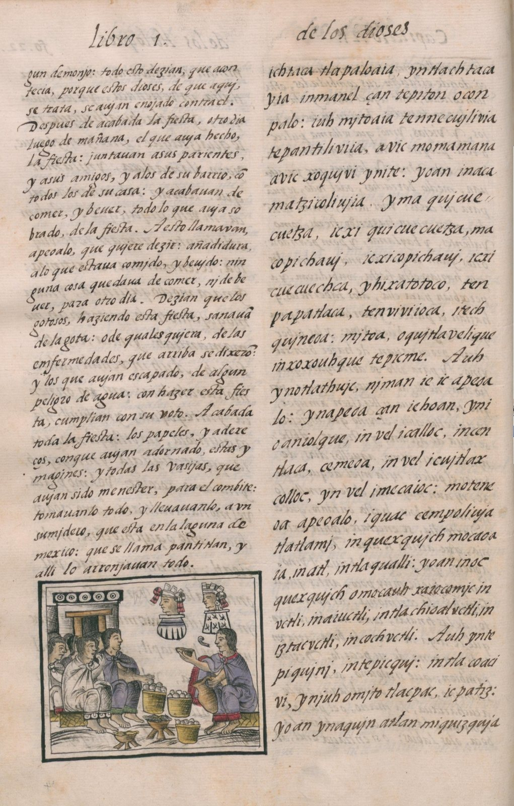

Type
IM Fell English
A 17th-century press face, the closest to a printed chronicle.
Alegreya Sans for text · IBM Plex Mono for captions

I · Códice · the cursor is a quill
Discover 200 years of Hispanic reunification thought. Get Hispanic Reunification: 200 Years of Theory and Praxis, the free pamphlet from De Indiis Editions.
Bernardino de Sahagún and Nahua scholars · Florentine Codex · 1575–77
Move the cursor: it writes in ink
The Florentine Codex is the founding document of the Hispanic world as a shared project: Franciscan friars and Nahua scholars writing, side by side, an encyclopaedia of Mexico in two languages and painted images. It is the opposite of the "conquest vs. victims" story, and it is the Institute's thesis in one object. The visitor writes on it with a quill.
IM Fell English
A 17th-century press face, the closest to a printed chronicle.
Alegreya Sans for text · IBM Plex Mono for captions
A codex-page notebook with the bilingual layout, and a cochineal-red tote with a speech-scroll glyph.
About 100 lines of canvas 2D in main.js, no libraries. A WebGL fluid (ink diffusing in water) would be the premium version. With reduced motion the page is a still image.
This page is the without-Unicorn version: canvas ink trail (or a WebGL fluid) over a public-domain folio.
1 day · high